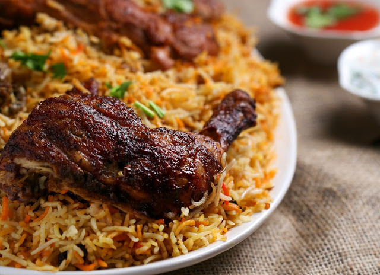
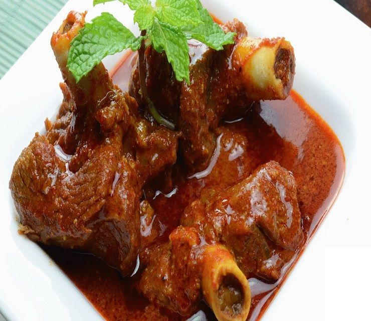

[এগ চিকেন পাস্তা]
উপাদানগুলি
- ২ কাপ পাস্তা
- ১ কাপ চিকেন।
- ১ টা ডিম
- ১ কাপ পিয়াজ কুচি।
- ১ কাপ টমেটো সস
- 1/2 চা চামচ পাচফোড়ন গুড়া
- ১ চা চামচ ম্যাগি মসলা
- 1/2 চা চামচ ভাজা জিরা গুড়া।
- ৬-৭ টা কাচামরিচ কুচি
- ১ চিমটি হলুদ
- পছন্দ মত ধনিয়া পাতা কুচি
- পরিমান মত লবন
- পরিমান মত রান্নার তেল
রান্নার নির্দেশ
- প্রথমেই পিয়াজ কাচামরিচ ধনিয়া পাতা চিকেন সব ধুয়ে কেটে নিব।আমি চিকেন পাস্তার মত লম্বা লম্বা করে কেটেছি। আপনারা নিজের পছন্দ মত কেটে নিবেন।।
- এবার চুলায় পাতিল বসিয়ে ৪ কাপ পানি দিয়ে সেটা ফুটিয়ে নিব।দ্যান ২ টে চামচ রান্নার তেল দিয়ে দিব।এবার পাস্তা দিয়ে ৩-৪ মিনিট জ্বাল দিয়ে সিদ্ধ করে নিব।
- দ্যান পাস্তা একটা চালুনিতে নিয়ে চেকে নিব।দ্যান ঠান্ডা পানি দিয়ে ধুয়ে নিব।
- এবার চুলায় প্যান বসিয়ে ২ চা চামচ তেল দিয়ে গরম করে নিব।দ্যান একচিমটি লবন দিয়ে দিব এবার চিকেন দিয়ে ভালো করে ভেজে নিব।দ্যান চিকেন সাইড করে সেটাতে ডিম দিয়ে ডিম ঝুরি করে ভেজে নিব।দ্যান মিক্স করে একটা প্লেট এ তুলে রেখে দিব।
- এবার প্যান এ ৩ টে চামচ তেল দিয়ে পিয়াজ কুচি দিয়ে ভেজে নিব।দ্যান কাচামরিচ লবন আর একচিমটি হলুদ দিয়ে ভেজে নিব।
- এবার ম্যাগি মসলা পাচফোড়ন দিয়ে মিশিয়ে নিব।দ্যান সস দিয়ে আবারো মিশিয়ে নিব।এবার পাস্তা গুলো দিয়ে দিব।
- নেড়েছেড়ে মিশিয়ে নিয়ে কম আচে ৪-৫ মিনিট রান্না করে নিব।দ্যান তুলে রাখা চিকেন ডিম আর ভাজা জিরা গুড়া দিয়ে দিব।।ভালো করে মিশিয়ে ডেকে ২ মিনিট রান্না করে নিব।
- হয়ে গেল এগ চিকেন পাস্তা এবার উপরে ধনিয়া পাতা দিয়ে গরম গরম পরিবেশন করুন।।

[কাচ্চি বিরিয়ানি]
উপাদানগুলি
- ১/২ কেজি পোলাউর চাল
- ১ কেজি খাশির মাংস
- ১ চা চামচ মরিচ গুঁড়া
- ১/২ কাপ সয়াবিন তেল
- ১ কাপ পেঁয়াজ কুচি বেরেস্তার জন্য
- ১.৫ টেবিল চামচ আদা বাটা
- ২ টেবিল চামচ রসুন বাটা
- ১ চা চামচ গরম মসলা গুঁড়া
- ১ টেবিল চামচ টক দই
- পরিমাণ মতো জয়িত্রী
- ১ চা চামচ শাহী জিরা
- ১ চা চামচ শাহী জিরা
- ২ টেবিল চামচ ঘি
- ৫-৬ টি আলু
- ৫-৬ টি আলু বোখারা
- ২টেবিল চামচ কেওড়ার জল
- স্বাদমত লবণ
- ১ কাপ গুঁড়া দুধ
রান্নার নির্দেশ
- প্রথমে ১ কাপ পেঁয়াজ কুঁচি তেলে ভেজে বেরেস্তা করে তুলে রাখতে হবে।
- তারপর খাশিরমাংস ভাল ভাবে ধুয়ে পানি ঝড়িয়ে নিয়ে তাতে সয়াবিন তেল, পেঁয়াজ বেরেস্তা, টক্ দই, মরিচ গুঁড়া,আদা, রসুন বাটা,গরম মসলা গুঁড়া,জায়তৃ ভেঙে ছরিয়ে দিয়ে ভালো ভাবে ম্যারিনেট করে ২০মিনিটৈর জন্য রেখে দিতে হবে।
- চাল ভালো ভাবে ধুয়ে পানি ঝড়িয়ে ১০মিনিটের জন্য রেখে দিতে হবে।
- তার পর চাল ফুটন্ত পানিতে দিয়ে,শাহী জিরা ছড়িয়ে দিতে হবে। চালে এক বলক আসলে চাল চুলো থেকে নামিয়ে আবারো পানি ঝরিয়ে নিতে হবে। তারপর আলু গুলো ঘী তে ভেজে তুলে রাখতে হবে।
- তারপর হাড়ী তে ম্যারিনেট করা খাশিরমাংস বিছিয়ে দিতে হবে। তার পর আলু গুলো বিছিয়ে দিতে হবে।তারপর চাল বিছিয়ে দিয়ে দিতে হবে।
- সবার শেষে, বেরেস্তা ছিটিয়ে দিয়ে আলু বোখারা, গুঁড়া দুধ পানি দিয়ে গুলিয়ে নিয়ে দিতে হবে। শেষে ঘী ছরিয়ে হাড়ীর মুখ আটা দিয়ে ভালো ভাবে বন্ধ করে দিতে হবে।
- বিরিয়ানী এর সুন্দর গন্ধ বের হলে মনে করতে হবে বিরিয়ানী হয়ে গেছে। সবশেষে নামিয়ে গরম গরম পরিবেশন করতে হবে।

[মটন]
উপাদানগুলি
- 1 কেজি মটন
- 2 টে পেঁয়াজ কুচি
- 1 টে টমেটো কুচি
- 4 টে কাচা লঙ্কা চেরা
- 2 টেবিল চামচ আদা রসুন বাটা
- 3 টেবিল চামচ পেঁয়াজ বাটা
- 1 টেবিল চামচ লাল লঙ্কা বাটা
- 1 টেবিল চামচ গরম মসলা গোটা ও জিরে গোটা ফোড়ন এর জন্য
- 2 টে তেজপাতা
- 2 টে শুঁকনো লঙ্কা
- 2 টেবিল চামচ হলুদ
- 1 টেবিল চামচ কাশ্মিরী লঙ্কা গুঁড়ো
- স্বাদ অনুযায়ী নুন
- 4 টেবিল চামচ সর্ষের তেল
- 1 টেবিল চামচ চিনি
- 3 টেবিল চামচ টক দই
- 3 পিস আলু
- 1 চা চামচ গরম মসলা গুঁড়া
রান্নার নির্দেশ
- প্রথমে মটন হালকা গরম জল দিয়ে ধুয়ে ও পরিষ্কার করে জল ঝরিয়ে নিতে হবে।টক দই ও নুন দিয়ে ভালো করে মেখে নিতে হবে।
- কড়াইতে তেল দিয়ে গরম হলে আলু দিয়ে ভালো করে ভেজে তুলে রাখতে হবে।
- সব উপকরন একসঙ্গে সাজিয়ে রাখতে হবে। কড়াই বসিয়ে গরম হলে তেল দিয়ে ফোড়ন দিয়ে ভালো করে নেড়ে দিতে হবে।
- কড়াইতে সব মসলা দিয়ে নুন, হলুদ লঙ্কা গুঁড়ো সব উপকরন একসঙ্গে মিশিয়ে ভালো করে কষাতে থাকুন।
- মসলা কষানো হলে মটন দিয়ে ভালো করে মিশিয়ে দিতে হবে ঢেকে রাখতে হবে।ঢেকে ঢেকে মাংস কষাতে হবে।
- ঢাকনা খুলে আলু দিয়ে আবার ঢেকে রাখতে হবে।মসলা ভালো করে কষানো হলে,পেসার কুকারে দিয়ে পরিমাণ মতো হালকা গরম জল দিয়ে ঢেকে রাখতে হবে।
- পেসার কুকারে 4 টে সিটি দিয়ে গ্যাস অফ করে দিতে হবে।পেসার কুকার খুলে গরম মসলা গুঁড়া দিয়ে ঢেকে রাখতে পারে।
- একটা পাত্রে ঢেলে গরম গরম পরিবেশন করতে হবে।

[ফ্রাইড রাইস ]
উপাদানগুলি
- কাপ রান্না করে রাখা ভাত
- 1/4 কাপ সব্জি কুচি
- 1 টি পেঁয়াজ কুচি করা
- 1/2 চা চামচ হলুদ
- 1 চা চামচ সয়া সস
- 1/2 চা চামচ ভিনিগার
- 1/2 চা চামচ রসুন কুচি
- স্বাদ মত নুন ও চিনি
- প্রয়োজন অনুযায়ী তেল
রান্নার নির্দেশ
- প্যানে তেল গরম করে তাতে পেঁয়াজ কুচি দিয়ে ভালো করে ভাজুন
- এবারে রসুন কুচি দিয়ে ভালো করে ভাজুন।সব্জি দিয়ে দিন এবং নুন ও হলুদ দিয়ে ঢাকা দিন
- এবারে রসুন কুচি দিয়ে ভালো করে ভাজুন।সব্জি দিয়ে দিন এবং নুন ও হলুদ দিয়ে ঢাকা দিন

[চিকেন উইংস]
উপাদানগুলি
- ২টো চিকেন পাখনার কাছ
- ৩-৪ কাপ ময়দা
- পরিমাণ মত আমূল দুধ
- ১টেবিল চামচ বাটার /মাখন
- স্বাদ মত চিলি ফ্লেক্স
- ১.৫ চা চামচ জিরে গুঁড়ো
- ১ চা চামচ নুন
- ১চা চামচ লঙ্কা গুঁড়ো
- পরিমাণ মত অরিগ্যানো পাউডার, রসুন পাউডার ( ঐচ্ছিক)
- ১.৫ চা চামচ রসুন বাটা
রান্নার নির্দেশ
- চিকেন পাখনা ছোটো পিস করে কেটে ১ চা চামচ করে নুন, লঙ্কা গুঁড়ো, ১চিমটে হলুদ গুঁড়ো, জিরে গুঁড়ো, চিলি ফ্লেক্স ১চা চামচ (না থাকলে শুকনো লঙ্কা ভেজে গুঁড়ো করে নেবেন), অরিগামী পাউডার, রসুন পাউডার ১/২ চা চামচ kore (বাড়িতে না থাকলে স্কিপ ও করতে পারেন- এগুলো দিলে স্বাদ আরও রেস্টুরেন্ট এর মতন হয়), ১/৪ চাচামচ আদা রসুন বাটা ১চা চামচ দিয়ে 5 মিনিট ম্যারিনেট করে রেখে একটা বাটিতে ১ চা চামচ মত আমূল দুধ গুলে ১/৪ চামচ মত বাটার মিশিয়ে 2-3 মিনিট ফেটিয়ে ম্যারিনেট করা চিকেন গুলো দুধে ডুবিয়ে ১ ঘন্টা ফ্রীজ এ রাখতে হবে.
- এতে চিকেন অনেক জুসি আর নরম হবে. এরপর একটি পাত্রে শুকনো ময়দা নিতে হবে, আর একটি পাত্রে জল নিতে হবে. এবার একটি করে চিকেন পিস ময়দা তে এপিঠ ওপিঠ করে মাখিয়ে ঝেড়ে, জলের পাত্রের বাটিতে জল এ ডুবিয়ে তুলে নিয়ে আবার ময়দা র বাটিতে দিয়ে হাত দিয়ে ময়দা তুলে চিকেন পিস টির গায়ে চেপে চেপে বসিয়ে দিতে হবে. জলে ডোবানোর কারণে চিকেন টির গায়ে পরবর্তী কালের ময়দা গুলো এবড়ো খেবড়ো ভাবে বসে যাবে হাতে চেপে বসানোর জন্য নীচের ছবি গুলির মত.
- এরপর সবগুলি চিকেন পিস রেডি হয়ে গেলে প্যান এর সয়াবিন তেল বা সাদা তেল নিয়ে লো টু মিডিয়াম ফ্লেম এ পিস গুলি ভেজে নিয়ে হবে. মিডিয়াম ফ্লেমে ভাজতে প্রায় 11-12 মিনিট মত লাগে. আপনার মন পছন্দ ক্রেজি স্নাক্স টি চটজলদি তৈরী. বাড়িতে অতিথি এলে বা সন্ধ্যাকালীন টিফিন এ স্বাদ বদলের জন্য রেসিপি টি অতুলনীয়.ধন্যবাদ.